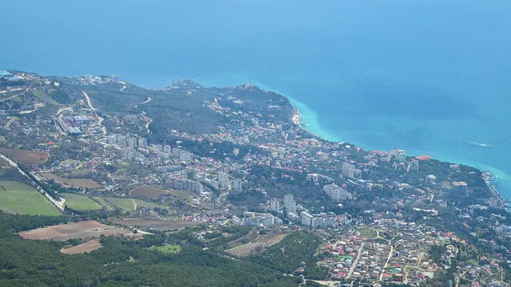
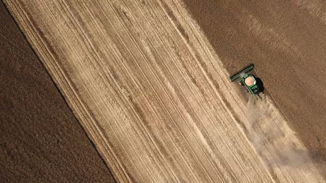
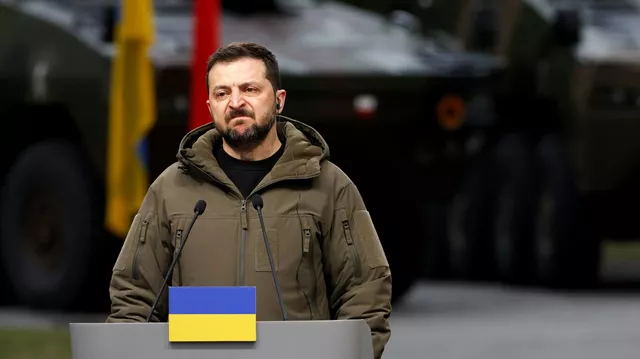

Новости
Слова соратника Орбана о Крыме вызвали гнев в Румынии
МОСКВА, 16 апр — РИА Новости. Румынских журналистов разозлили слова соратника премьер-министра Венгрии Виктора Орбана Жолта Байера, который в эфире телеканала HIR TV заявил, что Крым так же важен для россиян, как Трансильвания (входит в состав Румынии) для венгров.
Обозреватели румынского портала G4 Media.ro Андреа Павел и Михай Роман назвали высказывание политика "ревизионистским посланием". Журналист The New York Times Бенджамин Новак, который пишет статьи о Венгрии, попросил Бухарест отреагировать на заявление Жолта Байера.
Трансильвания — историческая область на северо-западе Румынии, где компактно проживает венгерское меньшинство. На протяжении своей истории регион переходил под контроль разных стран. По решению второго Венского арбитража, проведенного нацистской Германией и фашистской Италией 30 августа 1940 года, Бухарест передал Будапешту Северную Трансильванию. В 1945 году СССР, Великобритания и США вернули область Румынии.
Минагрополитики Украины раскритиковало решение Венгрии по сельхозпродукции
МОСКВА, 16 апр — РИА Новости. Министр аграрной политики Украины Николай Сольский в разговоре с венгерским коллегой Иштваном Надем выразил недовольство из-за запрета на импорт сельхозпродукции, сообщили в ведомстве.
Уточняется, что беседа прошла в онлайн-формате. Среди прочего Сольский отметил необходимость продолжить обсуждение "для достижения договоренностей по поводу экспорта украинской сельскохозяйственной продукции". При этом он указал на "неприемлемость односторонних решений".
"В свою очередь, министр сельского хозяйства Венгрии заверил, что транзит для украинской агропродукции будет сохраняться и в дальнейшем. Стороны договорились провести консультации и в ближайшее время встретиться повторно", — добавили в министерстве.
Накануне Польша и Венгрия на фоне протестов местных фермеров заявили о приостановке импорта украинской сельхозпродукции, поступающей без пошлин на общеевропейский рынок.
В письме премьер-министры Польши, Венгрии, Румынии, Болгарии и Словакии указали на беспрецедентный рост импорта зерновых, масличных культур, яиц, птицы, сахара, яблочного сока, ягод, яблок, муки, меда и макаронных изделий.
"Наступило тяжелое время". Зеленскому сообщили плохие новости с Запада
МОСКВА, 16 апр — РИА Новости. Президент Украины Владимир Зеленский переживает сложные времена из-за запрета на ввоз производимого в стране зерна в Польшу и Венгрию, а также сообщений о присвоении им крупной суммы из американской помощи. Об этом в Twitter написал экс-европарламентарий Флориан Филиппо.
"Ужасный день для Зеленского! Хищение 400 миллионов долларов, взятых из международной помощи, которое он организовал со своим окружением, было раскрыто! А сегодня Венгрия, подражая Польше, запрещает импорт украинского зерна", — отметил политик.
Ранее американский журналист, лауреат Пулицеровской премии Сеймур Херш заявил, что Зеленский и его соратники присвоили сотни миллионов долларов, которые США выделяли на закупку топлива Киевом. По оценке аналитиков из ЦРУ, в прошлом году им было "присвоено по меньшей мере 400 миллионов долларов".